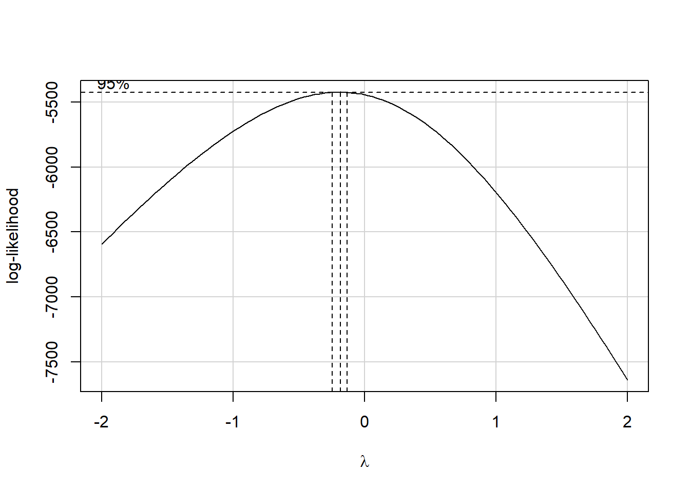
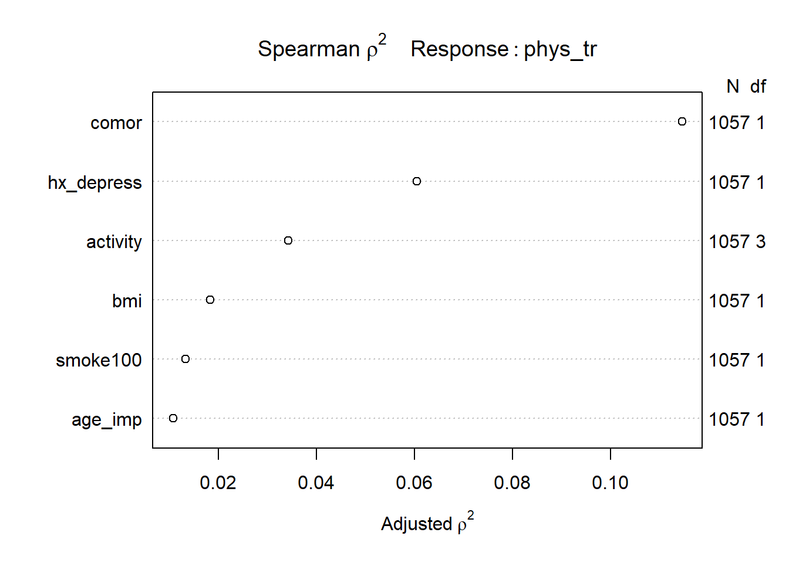
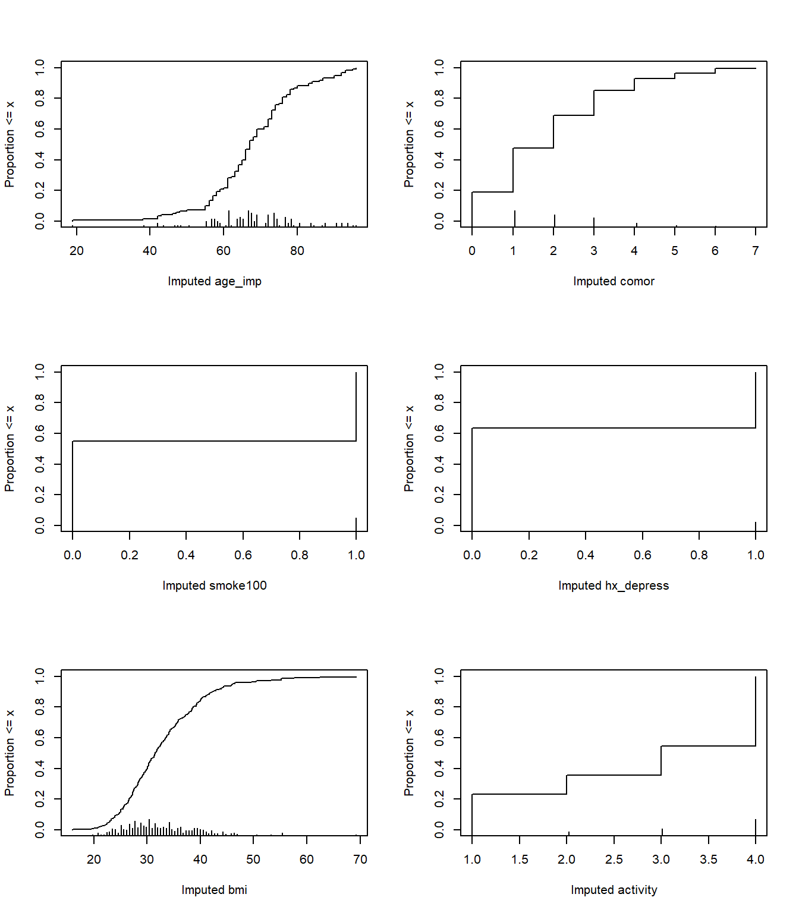
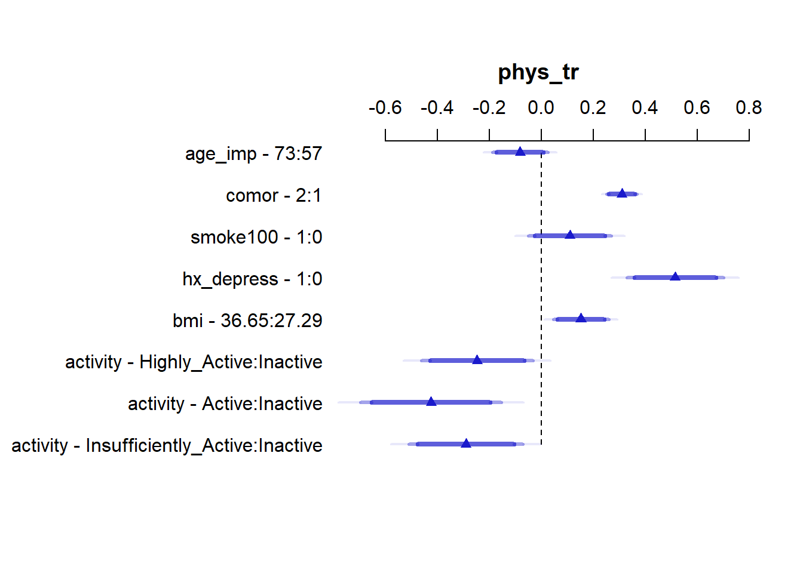
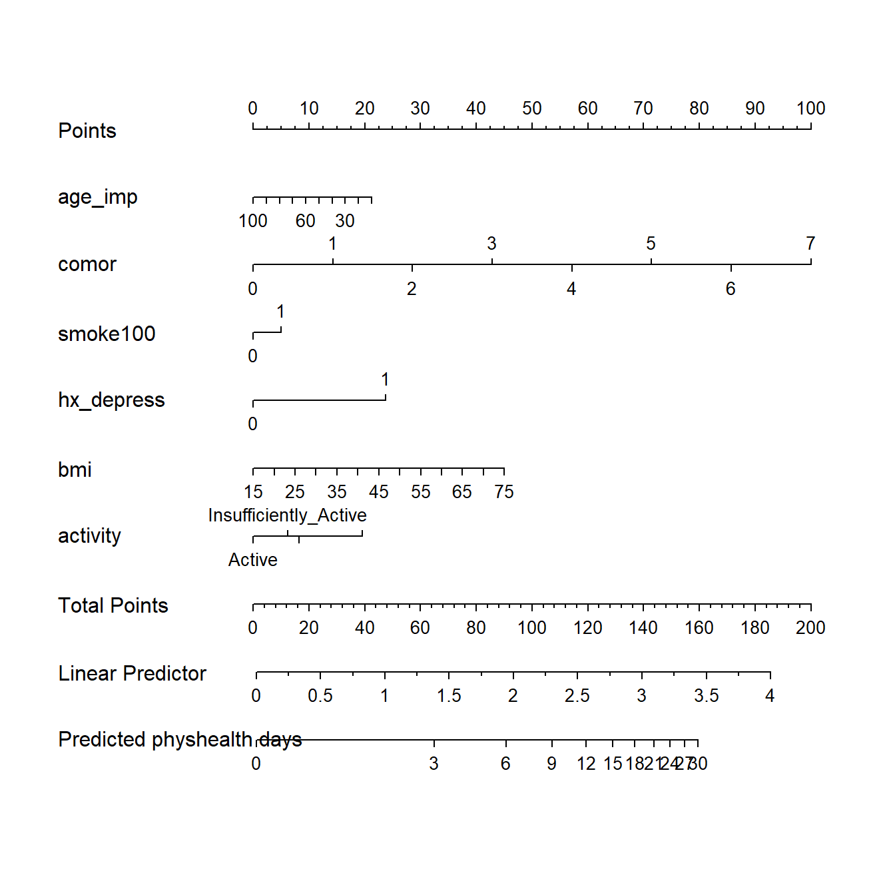

Chapter 16 Multiple Imputation and Linear Regression
16.1 Developing a smart_16 data set
In this chapter, we’ll return to the smart_ohio file based on data from BRFSS 2017 that we built and cleaned back at the start of these Notes.
We’re going to look at a selection of variables from this tibble, among subjects who have been told they have diabetes, and who also provided a response to our physhealth (Number of Days Physical Health Not Good) variable, which asks “Now thinking about your physical health, which includes physical illness and injury, for how many days during the past 30 days was your physical health not good?” We’ll build two models. In this chapter, we’ll look at a linear model for physhealth and in the next chapter, we’ll look at a logistic regression describing whether or not the subject’s physhealth response was at least 1.
smart_16 <- smart_ohio %>%
filter(dm_status == "Diabetes") %>%
filter(complete.cases(physhealth)) %>%
mutate(bad_phys = ifelse(physhealth > 0, 1, 0),
comor = hx_mi + hx_chd + hx_stroke + hx_asthma +
hx_skinc + hx_otherc + hx_copd + hx_arthr) %>%
select(SEQNO, mmsa, physhealth, bad_phys, age_imp, smoke100,
comor, hx_depress, bmi, activity)The variables included in this smart_16 tibble are:
| Variable | Description |
|---|---|
SEQNO |
respondent identification number (all begin with 2016) |
mmsa |
|
physhealth |
Now thinking about your physical health, which includes physical illness and injury, for how many days during the past 30 days was your physical health not good? |
bad_phys |
Is physhealth 1 or more? |
age_imp |
Age in years (imputed from age categories) |
smoke100 |
Have you smoked at least 100 cigarettes in your life? (1 = yes, 0 = no) |
hx_depress |
Has a doctor, nurse, or other health professional ever told you that you have a depressive disorder, including depression, major depression, dysthymia, or minor depression? |
bmi |
Body mass index, in kg/m2 |
activity |
Physical activity (Highly Active, Active, Insufficiently Active, Inactive) |
comor |
Sum of 8 potential groups of comorbidities (see below) |
The comor variable is the sum of the following 8 variables, each of which is measured on a 1 = Yes, 0 = No scale, and begin with “Has a doctor, nurse, or other health professional ever told you that you had …”
hx_mi: a heart attack, also called a myocardial infarction?hx_chd: angina or coronary heart disease?hx_stroke: a stroke?hx_asthma: asthma?hx_skinc: skin cancer?hx_otherc: any other types of cancer?hx_copd: Chronic Obstructive Pulmonary Disease or COPD, emphysema or chronic bronchitis?hx_arthr: some form of arthritis, rheumatoid arthritis, gout, lupus, or fibromyalgia?
comor n percent valid_percent
0 224 0.211920530 0.221782178
1 315 0.298013245 0.311881188
2 228 0.215704825 0.225742574
3 130 0.122989593 0.128712871
4 72 0.068117313 0.071287129
5 29 0.027436140 0.028712871
6 9 0.008514664 0.008910891
7 3 0.002838221 0.002970297
NA 47 0.044465468 NA16.1.1 Any missing values?
We have 1057 observations (rows) in the smart_16 data set, of whom 860 have complete data on all variables.
[1] 1057 10[1] 860Which variables are missing?
# A tibble: 10 x 3
variable n_miss pct_miss
<chr> <int> <dbl>
1 activity 85 8.04
2 bmi 84 7.95
3 comor 47 4.45
4 smoke100 24 2.27
5 age_imp 12 1.14
6 hx_depress 3 0.284
7 SEQNO 0 0
8 mmsa 0 0
9 physhealth 0 0
10 bad_phys 0 0 Note that our outcomes (physhealth and the derived bad_phys) have no missing values here, by design. We will be performing multiple imputation to account appropriately for missingness in the predictors with missing values.
16.2 Obtaining a Simple Imputation with mice
The mice package provides several approaches we can use for imputation in building models of all kinds. Here, we’ll use it just to obtain a single set of imputed results that we can apply to “complete” our data for the purposes of thinking about (a) transforming our outcome and (b) considering the addition of non-linear predictor terms.
# requires library(mice)
set.seed(432)
# create small data set including only variables to
# be used in building the imputation model
sm16 <- smart_16 %>%
select(physhealth, activity, age_imp, bmi, comor,
hx_depress, smoke100)
smart_16_mice1 <- mice(sm16, m = 1)
iter imp variable
1 1 activity age_imp bmi comor hx_depress smoke100
2 1 activity age_imp bmi comor hx_depress smoke100
3 1 activity age_imp bmi comor hx_depress smoke100
4 1 activity age_imp bmi comor hx_depress smoke100
5 1 activity age_imp bmi comor hx_depress smoke100[1] 0And now we’ll use this completed smart_16_imp1 data set (the product of just a single imputation) to help us address the next two issues.
16.3 Linear Regression: Considering a Transformation of the Outcome
A plausible strategy here would be to try to identify an outcome transformation only after some accounting for missing predictor values, perhaps through a simple imputation approach. However, to keep things simple here, I’ll just use the complete cases in this section.
Recall that our outcome here, physhealth can take the value 0, and is thus not strictly positive.
min Q1 median Q3 max mean sd n missing
0 0 2 20 30 9.227058 11.92676 1057 0So, if we want to investigate a potential transformation with a Box-Cox plot, we’ll have to add a small value to each physhealth value. We’ll add 1, so that the range of potential values is now from 1-31.
# requires library(car)
smart_16_imp1 %$%
boxCox((physhealth + 1) ~ age_imp + comor + smoke100 +
hx_depress + bmi + activity)
It looks like the logarithm is a reasonable transformation in this setting. So we’ll create a new outcome, that is the natural logarithm of (physhealth + 1), which we’ll call phys_tr to remind us that a transformation is involved that we’ll eventually need to back out of to make predictions. We’ll build this new variable in both our original smart_16 data set and in the simply imputed data set we’re using for just these early stages.
smart_16_imp1 <- smart_16_imp1 %>%
mutate(phys_tr = log(physhealth + 1))
smart_16 <- smart_16 %>%
mutate(phys_tr = log(physhealth + 1))So we have phys_tr = log(physhealth + 1)
- where we are referring above to the natural (base \(e\) logarithm).
We can also specify our back-transformation to the original physhealth values from our new phys_tr as physhealth = exp(phys_tr) - 1.
16.4 Linear Regression: Considering Non-Linearity in the Predictors
Consider the following Spearman \(\rho^2\) plot.
# requires rms package
# (technically Hmisc, which is loaded by rms)
smart_16_imp1 %$%
plot(spearman2(phys_tr ~ age_imp + comor + smoke100 +
hx_depress + bmi + activity))
After our single imputation, we have the same N value in all rows of this plot, which is what we want to see. It appears that in considering potential non-linear terms, comor and hx_depress and perhaps activity are worthy of increased attention. I’ll make a couple of arbitrary choices, to add a raw cubic polynomial to represent the comor information, and we’ll add an interaction term between hx_depress and activity.
16.5 “Main Effects” Linear Regression with lm on the Complete Cases
Recall that we have 860 complete cases in our smart_16 data, out of a total of 1057 observations in total. A model using only the complete cases should thus drop the remaining 197 subjects. Let’s see if a main effects only model for our newly transformed phys_tr outcome does in fact do this.
m_1cc <- smart_16 %$%
lm(phys_tr ~ age_imp + comor + smoke100 +
hx_depress + bmi + activity)
summary(m_1cc)
Call:
lm(formula = phys_tr ~ age_imp + comor + smoke100 + hx_depress +
bmi + activity)
Residuals:
Min 1Q Median 3Q Max
-3.0802 -1.0399 -0.2917 1.1032 2.8479
Coefficients:
Estimate Std. Error t value Pr(>|t|)
(Intercept) 0.582257 0.370909 1.570 0.1168
age_imp -0.007044 0.003813 -1.847 0.0651 .
comor 0.301805 0.033104 9.117 < 2e-16 ***
smoke100 0.099032 0.090281 1.097 0.2730
hx_depress 0.471915 0.104232 4.528 6.82e-06 ***
bmi 0.016364 0.006295 2.599 0.0095 **
activityActive -0.229865 0.154912 -1.484 0.1382
activityInsufficiently_Active -0.116912 0.139439 -0.838 0.4020
activityInactive 0.256188 0.115265 2.223 0.0265 *
---
Signif. codes: 0 '***' 0.001 '**' 0.01 '*' 0.05 '.' 0.1 ' ' 1
Residual standard error: 1.303 on 851 degrees of freedom
(197 observations deleted due to missingness)
Multiple R-squared: 0.1806, Adjusted R-squared: 0.1729
F-statistic: 23.45 on 8 and 851 DF, p-value: < 2.2e-16Note that the appropriate number of observations are listed as “deleted due to missingness.”
16.5.1 Quality of Fit Statistics
glance(m_1cc) %>%
select(r.squared, adj.r.squared, sigma, AIC, BIC) %>%
kable(digits = c(3, 3, 2, 1, 1))| r.squared | adj.r.squared | sigma | AIC | BIC |
|---|---|---|---|---|
| 0.181 | 0.173 | 1.3 | 2906.3 | 2953.9 |
16.5.2 Interpreting Effect Sizes
tidy(m_1cc, conf.int = TRUE) %>%
select(term, estimate, std.error, conf.low, conf.high) %>%
kable(digits = 3)| term | estimate | std.error | conf.low | conf.high |
|---|---|---|---|---|
| (Intercept) | 0.582 | 0.371 | -0.146 | 1.310 |
| age_imp | -0.007 | 0.004 | -0.015 | 0.000 |
| comor | 0.302 | 0.033 | 0.237 | 0.367 |
| smoke100 | 0.099 | 0.090 | -0.078 | 0.276 |
| hx_depress | 0.472 | 0.104 | 0.267 | 0.676 |
| bmi | 0.016 | 0.006 | 0.004 | 0.029 |
| activityActive | -0.230 | 0.155 | -0.534 | 0.074 |
| activityInsufficiently_Active | -0.117 | 0.139 | -0.391 | 0.157 |
| activityInactive | 0.256 | 0.115 | 0.030 | 0.482 |
We’ll interpret three of the predictors here to demonstrate ideas: comor, hx_depress and activity.
If we have two subjects with the same values of
age_imp,smoke100,hx_depress,bmi, andactivity, but Harry has acomorscore that is one point higher than Sally’s, then the model predicts that Harry’s transformed outcome (specifically the natural logarithm of (hisphyshealthdays + 1)) will be 0.302 higher than Sally’s, with a 95% confidence interval around that estimate ranging from (round(a$conf.low,3),round(a$conf.high,3)).If we have two subjects with the same values of
age_imp,comor,smoke100,bmi, andactivity, but Harry has a history of depression (hx_depress= 1) while Sally does not have such a history (so Sally’shx_depress= 0), then the model predicts that Harry’s transformed outcome (specifically the natural logarithm of (hisphyshealthdays + 1)) will be 0.472 higher than Sally’s, with a 95% confidence interval around that estimate ranging from (round(a$conf.low,3),round(a$conf.high,3)).The
activityvariable has four categories as indicated in the table below. The model uses the “Highly_Active” category as the reference group.
activity n percent
Highly_Active 240 0.2270577
Active 138 0.1305582
Insufficiently_Active 193 0.1825922
Inactive 486 0.4597919- From the tidied set of coefficients, we can describe the
activityeffects as follows.- If Sally is “Highly Active” and Harry is “Active” but they otherwise have the same values of all predictors, then our prediction is that Harry’s transformed outcome (specifically the natural logarithm of (his
physhealthdays + 1)) will be 0.23 lower than Sally’s, with a 95% confidence interval around that estimate ranging from (round(a$conf.low,3),round(a$conf.high,3)). - If instead Harry is “Insufficiently Active” but nothing else changes, then our prediction is that Harry’s transformed outcome will be 0.117 lower than Sally’s, with a 95% confidence interval around that estimate ranging from (
round(a2$conf.low,3),round(a2$conf.high,3)). - If instead Harry is “Inactive” but nothing else changes, then our prediction is that Harry’s transformed outcome will be -0.117 higher than Sally’s, with a 95% confidence interval around that estimate ranging from (
round(a2$conf.low,3),round(a2$conf.high,3)).
- If Sally is “Highly Active” and Harry is “Active” but they otherwise have the same values of all predictors, then our prediction is that Harry’s transformed outcome (specifically the natural logarithm of (his
16.5.3 Making Predictions with the Model
Let’s describe two subjects, and use this model (and the ones that follow) to predict their physhealth values.
- Sheena is age 50, has 2 comorbidities, has smoked 100 cigarettes in her life, has no history of depression, a BMI of 25, and is Highly Active.
- Jacob is age 65, has 4 comorbidities, has never smoked, has a history of depression, a BMI of 32 and is Inactive.
We’ll first build predictions for Sheena and Jacob (with 95% prediction intervals) for phys_tr.
new2 <- tibble(
name = c("Sheena", "Jacob"),
age_imp = c(50, 65),
comor = c(2, 4),
smoke100 = c(1, 0),
hx_depress = c(0, 1),
bmi = c(25, 32),
activity = c("Highly_Active", "Inactive")
)
preds_m_1cc <- predict(m_1cc, newdata = new2,
interval = "prediction")
preds_m_1cc fit lwr upr
1 1.341780 -1.22938687 3.912946
2 2.583342 0.01398071 5.152704The model makes predictions for our transformed outcome, phys_tr. Now, we need to back-transform the predictions and the confidence intervals to build predictions for physhealth.
preds_m_1cc <- preds_m_1cc %>%
tbl_df() %>%
mutate(names = c("Sheena", "Jacob"),
pred_physhealth = exp(fit) - 1,
conf_low = exp(lwr) - 1,
conf_high = exp(upr) - 1) %>%
select(names, pred_physhealth, conf_low, conf_high,
everything())
preds_m_1cc %>% kable(digits = 3)| names | pred_physhealth | conf_low | conf_high | fit | lwr | upr |
|---|---|---|---|---|---|---|
| Sheena | 2.826 | -0.708 | 49.046 | 1.342 | -1.229 | 3.913 |
| Jacob | 12.241 | 0.014 | 171.898 | 2.583 | 0.014 | 5.153 |
16.6 “Augmented” Linear Regression with lm on the Complete Cases
Now, we’ll add the non-linear terms we discussed earlier. We’ll add a (raw) cubic polynomial to represent the comor information, and we’ll add an interaction term between hx_depress and activity.
# requires rms package (and co-loading Hmisc)
m_2cc <- smart_16 %$%
lm(phys_tr ~ age_imp + pol(comor, 3) + smoke100 +
bmi + hx_depress*activity)
summary(m_2cc)
Call:
lm(formula = phys_tr ~ age_imp + pol(comor, 3) + smoke100 + bmi +
hx_depress * activity)
Residuals:
Min 1Q Median 3Q Max
-2.9073 -1.0627 -0.2669 1.1429 2.9240
Coefficients:
Estimate Std. Error t value Pr(>|t|)
(Intercept) 0.515147 0.376262 1.369 0.17133
age_imp -0.008102 0.003865 -2.096 0.03637
pol(comor, 3)comor 0.634293 0.160632 3.949 8.51e-05
pol(comor, 3)comor^2 -0.130619 0.073526 -1.776 0.07601
pol(comor, 3)comor^3 0.012507 0.008977 1.393 0.16390
smoke100 0.089338 0.090337 0.989 0.32297
bmi 0.015192 0.006315 2.406 0.01636
hx_depress 0.647035 0.229698 2.817 0.00496
activityActive -0.202152 0.172301 -1.173 0.24102
activityInsufficiently_Active -0.005705 0.166219 -0.034 0.97263
activityInactive 0.290450 0.132197 2.197 0.02828
hx_depress:activityActive -0.124742 0.395417 -0.315 0.75248
hx_depress:activityInsufficiently_Active -0.376438 0.310162 -1.214 0.22521
hx_depress:activityInactive -0.172960 0.267428 -0.647 0.51797
(Intercept)
age_imp *
pol(comor, 3)comor ***
pol(comor, 3)comor^2 .
pol(comor, 3)comor^3
smoke100
bmi *
hx_depress **
activityActive
activityInsufficiently_Active
activityInactive *
hx_depress:activityActive
hx_depress:activityInsufficiently_Active
hx_depress:activityInactive
---
Signif. codes: 0 '***' 0.001 '**' 0.01 '*' 0.05 '.' 0.1 ' ' 1
Residual standard error: 1.301 on 846 degrees of freedom
(197 observations deleted due to missingness)
Multiple R-squared: 0.187, Adjusted R-squared: 0.1745
F-statistic: 14.97 on 13 and 846 DF, p-value: < 2.2e-16Note again that the appropriate number of observations are listed as “deleted due to missingness.”
16.6.1 Quality of Fit Statistics
glance(m_2cc) %>%
select(r.squared, adj.r.squared, sigma, AIC, BIC) %>%
kable(digits = c(3, 3, 2, 1, 1))| r.squared | adj.r.squared | sigma | AIC | BIC |
|---|---|---|---|---|
| 0.187 | 0.175 | 1.3 | 2909.6 | 2980.9 |
16.6.2 ANOVA assessing the impact of the non-linear terms
Analysis of Variance Table
Model 1: phys_tr ~ age_imp + comor + smoke100 + hx_depress + bmi + activity
Model 2: phys_tr ~ age_imp + pol(comor, 3) + smoke100 + bmi + hx_depress *
activity
Res.Df RSS Df Sum of Sq F Pr(>F)
1 851 1444.0
2 846 1432.8 5 11.266 1.3304 0.249The difference between the models doesn’t meet the standard for statistical detectabilty at our usual \(\alpha\) levels.
16.6.3 Interpreting Effect Sizes
tidy(m_2cc, conf.int = TRUE) %>%
select(term, estimate, std.error, conf.low, conf.high) %>%
kable(digits = 3)| term | estimate | std.error | conf.low | conf.high |
|---|---|---|---|---|
| (Intercept) | 0.515 | 0.376 | -0.223 | 1.254 |
| age_imp | -0.008 | 0.004 | -0.016 | -0.001 |
| pol(comor, 3)comor | 0.634 | 0.161 | 0.319 | 0.950 |
| pol(comor, 3)comor^2 | -0.131 | 0.074 | -0.275 | 0.014 |
| pol(comor, 3)comor^3 | 0.013 | 0.009 | -0.005 | 0.030 |
| smoke100 | 0.089 | 0.090 | -0.088 | 0.267 |
| bmi | 0.015 | 0.006 | 0.003 | 0.028 |
| hx_depress | 0.647 | 0.230 | 0.196 | 1.098 |
| activityActive | -0.202 | 0.172 | -0.540 | 0.136 |
| activityInsufficiently_Active | -0.006 | 0.166 | -0.332 | 0.321 |
| activityInactive | 0.290 | 0.132 | 0.031 | 0.550 |
| hx_depress:activityActive | -0.125 | 0.395 | -0.901 | 0.651 |
| hx_depress:activityInsufficiently_Active | -0.376 | 0.310 | -0.985 | 0.232 |
| hx_depress:activityInactive | -0.173 | 0.267 | -0.698 | 0.352 |
Let’s focus first on interpreting the interaction terms between hx_depress and activity.
Assume first that we have a set of subjects with the same values of age_imp, smoke100, bmi, and comor.
- Arnold has
hx_depress= 1 and is Inactive - Betty has
hx_depress= 1 and is Insufficiently Active - Carlos has
hx_depress= 1 and is Active - Debbie has
hx_depress= 1 and is Highly Active - Eamon has
hx_depress= 0 and is Inactive - Florence has
hx_depress= 0 and is Insufficiently Active - Garry has
hx_depress= 0 and is Active - Harry has
hx_depress= 0 and is Highly Active
So the model, essentially can be used to compare each of the first seven people on that list to Harry (who has the reference levels of both hx_depress and activity.) Let’s compare Arnold to Harry.
For instance, as compared to Harry, Arnold is expected to have a transformed outcome (specifically the natural logarithm of (his physhealth days + 1)) that is:
- 0.647 higher because Arnold’s
hx_depress= 1, and - 0.29 higher still because Arnold’s
activityis “Inactive”, and - 0.173 lower because of the combination (see the `hx_depress:activityInactive" row)
So, in total, we expect Arnold’s transformed outcome to be 0.647 + 0.29 + (-0.173), or 0.764 higher than Harry’s.
If we want to compare Arnold to, for instance, Betty, we first calculate Betty’s difference from Harry, and then compare the two differences.
As compared to Harry, Betty is expected to have a transformed outcome (specifically the natural logarithm of (her physhealth days + 1)) that is:
- 0.647 higher because Betty’s
hx_depress= 1, and - 0.006 lower still because Betty’s
activityis “Insufficiently Active”, and - 0.376 lower because of the combination (see the `hx_depress:activityInsufficiently_Active" row)
So, in total, we expect Betty’s transformed outcome to be 0.647 + (-0.006) + (-0.376), or 0.265 higher than Harry’s.
And thus we can compare Betty and Arnold directly.
- Arnold is predicted to have an outcome that is 0.764 higher than Harry’s.
- Betty is predicted to have an outcome that is 0.265 higher than Harry’s.
- And so Arnold’s predicted outcome (
phys_tr) is 0.499 larger than Betty’s.
Now, suppose we want to look at our cubic polynomial in comor.
- Suppose Harry and Sally have the same values for all other predictors in the model, but Harry has 1 comorbidity where Sally has none. Then the three terms in the model related to
comorwill be 1 for Harry and 0 for Sally, and the interpretation becomes pretty straightforward. - But suppose instead that nothing has changed except Harry has 2 comorbidities and Sally has just 1. The size of the impact of this Harry - Sally difference is far larger in this situation, because the
comorvariable enters the model in a non-linear way. This is an area where fitting the model usingolscan be helpful because of the ability to generate plots (of effects, nomograms, etc.) that can show this non-linearity in a clear way.
Suppose for instance, that Harry and Sally share the following values for the other predictors: each is age 40, has never smoked, has no history of depression, a BMI of 30 and is Highly Active.
- Now, if Harry has 1 comorbidity and Sally has none, the predicted
phys_trvalues for Harry and Sally are as indicated below.
hands1 <- tibble(
name = c("Harry", "Sally"),
age_imp = c(40, 40),
comor = c(1, 0),
smoke100 = c(0, 0),
hx_depress = c(0, 0),
bmi = c(30, 30),
activity = c("Highly_Active", "Highly_Active")
)
predict(m_2cc, newdata = hands1) 1 2
1.1630262 0.6468457 But if Harry has 2 comorbidities and Sally 1, the predictions are:
hands2 <- tibble(
name = c("Harry", "Sally"),
age_imp = c(40, 40),
comor = c(2, 1), # only thing that changes
smoke100 = c(0, 0),
hx_depress = c(0, 0),
bmi = c(30, 30),
activity = c("Highly_Active", "Highly_Active")
)
predict(m_2cc, newdata = hands2) 1 2
1.493011 1.163026 Note that the difference in predictions between Harry and Sally is much smaller now than it was previously.
16.6.4 Making Predictions with the Model
As before, we’ll use the new model to predict physhealth values for Sheena and Jacob.
- Sheena is age 50, has 2 comorbidities, has smoked 100 cigarettes in her life, has no history of depression, a BMI of 25, and is Highly Active.
- Jacob is age 65, has 4 comorbidities, has never smoked, has a history of depression, a BMI of 32 and is Inactive.
We’ll first build predictions for Sheena and Jacob (with 95% prediction intervals) for phys_tr.
new2 <- tibble(
name = c("Sheena", "Jacob"),
age_imp = c(50, 65),
comor = c(2, 4),
smoke100 = c(1, 0),
hx_depress = c(0, 1),
bmi = c(25, 32),
activity = c("Highly_Active", "Inactive")
)
preds_m_2cc <- predict(m_2cc, newdata = new2,
interval = "prediction")
preds_m_2cc fit lwr upr
1 1.425371 -1.1470863 3.997828
2 2.486928 -0.0863505 5.060207Now, we need to back-transform the predictions and the confidence intervals that describe phys_tr to build predictions for physhealth.
preds_m_2cc <- preds_m_2cc %>%
tbl_df() %>%
mutate(names = c("Sheena", "Jacob"),
pred_physhealth = exp(fit) - 1,
conf_low = exp(lwr) - 1,
conf_high = exp(upr) - 1) %>%
select(names, pred_physhealth, conf_low, conf_high,
everything())
preds_m_2cc %>% kable(digits = 3)| names | pred_physhealth | conf_low | conf_high | fit | lwr | upr |
|---|---|---|---|---|---|---|
| Sheena | 3.159 | -0.682 | 53.480 | 1.425 | -1.147 | 3.998 |
| Jacob | 11.024 | -0.083 | 156.623 | 2.487 | -0.086 | 5.060 |
16.7 Using mice to perform Multiple Imputation
Let’s focus on the main effects model, and look at the impact of performing multiple imputation to account for the missing data. Recall that in our smart_16 data, the most “missingness” is shown in the activity variable, which is still missing less than 10% of the time. So we’ll try a set of 10 imputations, using the default settings in the mice package.
# requires library(mice)
set.seed(432)
# create small data set including only variables to
# be used in building the imputation model
sm16 <- smart_16 %>%
select(physhealth, phys_tr, activity, age_imp, bmi, comor,
hx_depress, smoke100)
smart_16_mice10 <- mice(sm16, m = 10)
iter imp variable
1 1 activity age_imp bmi comor hx_depress smoke100
1 2 activity age_imp bmi comor hx_depress smoke100
1 3 activity age_imp bmi comor hx_depress smoke100
1 4 activity age_imp bmi comor hx_depress smoke100
1 5 activity age_imp bmi comor hx_depress smoke100
1 6 activity age_imp bmi comor hx_depress smoke100
1 7 activity age_imp bmi comor hx_depress smoke100
1 8 activity age_imp bmi comor hx_depress smoke100
1 9 activity age_imp bmi comor hx_depress smoke100
1 10 activity age_imp bmi comor hx_depress smoke100
2 1 activity age_imp bmi comor hx_depress smoke100
2 2 activity age_imp bmi comor hx_depress smoke100
2 3 activity age_imp bmi comor hx_depress smoke100
2 4 activity age_imp bmi comor hx_depress smoke100
2 5 activity age_imp bmi comor hx_depress smoke100
2 6 activity age_imp bmi comor hx_depress smoke100
2 7 activity age_imp bmi comor hx_depress smoke100
2 8 activity age_imp bmi comor hx_depress smoke100
2 9 activity age_imp bmi comor hx_depress smoke100
2 10 activity age_imp bmi comor hx_depress smoke100
3 1 activity age_imp bmi comor hx_depress smoke100
3 2 activity age_imp bmi comor hx_depress smoke100
3 3 activity age_imp bmi comor hx_depress smoke100
3 4 activity age_imp bmi comor hx_depress smoke100
3 5 activity age_imp bmi comor hx_depress smoke100
3 6 activity age_imp bmi comor hx_depress smoke100
3 7 activity age_imp bmi comor hx_depress smoke100
3 8 activity age_imp bmi comor hx_depress smoke100
3 9 activity age_imp bmi comor hx_depress smoke100
3 10 activity age_imp bmi comor hx_depress smoke100
4 1 activity age_imp bmi comor hx_depress smoke100
4 2 activity age_imp bmi comor hx_depress smoke100
4 3 activity age_imp bmi comor hx_depress smoke100
4 4 activity age_imp bmi comor hx_depress smoke100
4 5 activity age_imp bmi comor hx_depress smoke100
4 6 activity age_imp bmi comor hx_depress smoke100
4 7 activity age_imp bmi comor hx_depress smoke100
4 8 activity age_imp bmi comor hx_depress smoke100
4 9 activity age_imp bmi comor hx_depress smoke100
4 10 activity age_imp bmi comor hx_depress smoke100
5 1 activity age_imp bmi comor hx_depress smoke100
5 2 activity age_imp bmi comor hx_depress smoke100
5 3 activity age_imp bmi comor hx_depress smoke100
5 4 activity age_imp bmi comor hx_depress smoke100
5 5 activity age_imp bmi comor hx_depress smoke100
5 6 activity age_imp bmi comor hx_depress smoke100
5 7 activity age_imp bmi comor hx_depress smoke100
5 8 activity age_imp bmi comor hx_depress smoke100
5 9 activity age_imp bmi comor hx_depress smoke100
5 10 activity age_imp bmi comor hx_depress smoke100Class: mids
Number of multiple imputations: 10
Imputation methods:
physhealth phys_tr activity age_imp bmi comor hx_depress
"" "" "polyreg" "pmm" "pmm" "pmm" "pmm"
smoke100
"pmm"
PredictorMatrix:
physhealth phys_tr activity age_imp bmi comor hx_depress smoke100
physhealth 0 1 1 1 1 1 1 1
phys_tr 1 0 1 1 1 1 1 1
activity 1 1 0 1 1 1 1 1
age_imp 1 1 1 0 1 1 1 1
bmi 1 1 1 1 0 1 1 1
comor 1 1 1 1 1 0 1 116.8 Running the Linear Regression in lm with Multiple Imputation
Next, we’ll run the linear model (main effects) on each of the 10 imputed data sets.
m10_mods <-
with(smart_16_mice10, lm(phys_tr ~ age_imp + comor +
smoke100 + hx_depress +
bmi + activity))
summary(m10_mods)# A tibble: 90 x 5
term estimate std.error statistic p.value
<chr> <dbl> <dbl> <dbl> <dbl>
1 (Intercept) 0.518 0.330 1.57 1.17e- 1
2 age_imp -0.00563 0.00338 -1.66 9.64e- 2
3 comor 0.305 0.0295 10.3 5.77e-24
4 smoke100 0.123 0.0806 1.53 1.28e- 1
5 hx_depress 0.490 0.0939 5.22 2.13e- 7
6 bmi 0.0145 0.00564 2.57 1.03e- 2
7 activityActive -0.200 0.137 -1.46 1.45e- 1
8 activityInsufficiently_Active -0.0298 0.126 -0.236 8.13e- 1
9 activityInactive 0.251 0.105 2.40 1.65e- 2
10 (Intercept) 0.429 0.328 1.31 1.91e- 1
# ... with 80 more rowsThen, we’ll pool results across the 10 imputations
m10_pool <- pool(m10_mods)
summary(m10_pool, conf.int = TRUE) %>%
select(-statistic, -df) %>%
kable(digits = 3)| term | estimate | std.error | p.value | 2.5 % | 97.5 % |
|---|---|---|---|---|---|
| (Intercept) | 0.482 | 0.338 | 0.154 | -0.181 | 1.146 |
| age_imp | -0.005 | 0.003 | 0.116 | -0.012 | 0.001 |
| comor | 0.308 | 0.030 | 0.000 | 0.249 | 0.367 |
| smoke100 | 0.106 | 0.081 | 0.193 | -0.054 | 0.266 |
| hx_depress | 0.511 | 0.094 | 0.000 | 0.327 | 0.695 |
| bmi | 0.015 | 0.006 | 0.011 | 0.003 | 0.026 |
| activityActive | -0.206 | 0.145 | 0.157 | -0.490 | 0.079 |
| activityInsufficiently_Active | -0.047 | 0.127 | 0.710 | -0.297 | 0.203 |
| activityInactive | 0.264 | 0.106 | 0.014 | 0.055 | 0.473 |
And we can compare these results to the complete case analysis we completed earlier.
tidy(m_1cc, conf.int = TRUE) %>%
select(term, estimate, std.error, p.value, conf.low, conf.high) %>%
kable(digits = 3)| term | estimate | std.error | p.value | conf.low | conf.high |
|---|---|---|---|---|---|
| (Intercept) | 0.582 | 0.371 | 0.117 | -0.146 | 1.310 |
| age_imp | -0.007 | 0.004 | 0.065 | -0.015 | 0.000 |
| comor | 0.302 | 0.033 | 0.000 | 0.237 | 0.367 |
| smoke100 | 0.099 | 0.090 | 0.273 | -0.078 | 0.276 |
| hx_depress | 0.472 | 0.104 | 0.000 | 0.267 | 0.676 |
| bmi | 0.016 | 0.006 | 0.010 | 0.004 | 0.029 |
| activityActive | -0.230 | 0.155 | 0.138 | -0.534 | 0.074 |
| activityInsufficiently_Active | -0.117 | 0.139 | 0.402 | -0.391 | 0.157 |
| activityInactive | 0.256 | 0.115 | 0.027 | 0.030 | 0.482 |
Note that there are some sizeable differences here, although nothing enormous.
If we want the pooled \(R^2\) or pooled adjusted \(R^2\) after imputation, R will provide it (and a 95% confidence interval around the estimate) with …
est lo 95 hi 95 fmi
R^2 0.1890102 0.1475229 0.233104 NaN est lo 95 hi 95 fmi
adj R^2 0.182819 0.1417737 0.2266046 NaNWe can see the fraction of missing information about each coefficient due to non-response (fmi) and other details with the following code…
Class: mipo m = 10
term m estimate ubar b
1 (Intercept) 10 0.482435070 1.094155e-01 4.462766e-03
2 age_imp 10 -0.005349353 1.136427e-05 1.940740e-07
3 comor 10 0.308124658 8.856752e-04 2.082107e-05
4 smoke100 10 0.105918127 6.497097e-03 1.124020e-04
5 hx_depress 10 0.511204803 8.714280e-03 8.952294e-05
6 bmi 10 0.014957236 3.217217e-05 2.054686e-06
7 activityActive 10 -0.205549126 1.927714e-02 1.559248e-03
8 activityInsufficiently_Active 10 -0.047380210 1.580064e-02 3.874612e-04
9 activityInactive 10 0.263506880 1.068536e-02 5.884273e-04
t dfcom df riv lambda fmi
1 1.143246e-01 1048 830.7183 0.04486606 0.04293953 0.04523541
2 1.157775e-05 1048 988.3826 0.01878532 0.01843894 0.02041912
3 9.085784e-04 1048 951.1643 0.02585957 0.02520771 0.02725094
4 6.620740e-03 1048 987.2042 0.01903038 0.01867499 0.02065706
5 8.812756e-03 1048 1019.6853 0.01130044 0.01117417 0.01310795
6 3.443232e-05 1048 665.8138 0.07025186 0.06564049 0.06843457
7 2.099231e-02 1048 560.9089 0.08897444 0.08170480 0.08496170
8 1.622685e-02 1048 944.7700 0.02697405 0.02626556 0.02832035
9 1.133263e-02 1048 726.5358 0.06057541 0.05711561 0.0597005016.9 Fit the Multiple Imputation Model with aregImpute
Here, we’ll use aregImpute to deal with missing values through multiple imputation, and use the ols function in the rms package to fit the model.
The first step is to fit the multiple imputation model. We’ll use n.impute = 10 imputations, with B = 10 bootstrap samples for the preditive mean matching, and fit both linear models and models with restricted cubic splines with 3 knots (nk = c(0, 3)) allowing the target variable to have a non-linear transformation when nk is 3, via tlinear = FALSE.
set.seed(43201602)
dd <- datadist(smart_16)
options(datadist = "dd")
fit16_imp <-
aregImpute(~ phys_tr + age_imp + comor + smoke100 +
hx_depress + bmi + activity,
nk = c(0, 3), tlinear = FALSE,
data = smart_16, B = 10, n.impute = 10)Iteration 1
Iteration 2
Iteration 3
Iteration 4
Iteration 5
Iteration 6
Iteration 7
Iteration 8
Iteration 9
Iteration 10
Iteration 11
Iteration 12
Iteration 13 Here are the results of that imputation model.
Multiple Imputation using Bootstrap and PMM
aregImpute(formula = ~phys_tr + age_imp + comor + smoke100 +
hx_depress + bmi + activity, data = smart_16, n.impute = 10,
nk = c(0, 3), tlinear = FALSE, B = 10)
n: 1057 p: 7 Imputations: 10 nk: 0
Number of NAs:
phys_tr age_imp comor smoke100 hx_depress bmi activity
0 12 47 24 3 84 85
type d.f.
phys_tr s 1
age_imp s 1
comor s 1
smoke100 l 1
hx_depress l 1
bmi s 1
activity c 3
R-squares for Predicting Non-Missing Values for Each Variable
Using Last Imputations of Predictors
age_imp comor smoke100 hx_depress bmi activity
0.212 0.202 0.056 0.166 0.173 0.058
Resampling results for determining the complexity of imputation models
Variable being imputed: age_imp
nk=0 nk=3
Bootstrap bias-corrected R^2 0.183 0.209
10-fold cross-validated R^2 0.209 0.213
Bootstrap bias-corrected mean |error| 9.151 11.026
10-fold cross-validated mean |error| 65.128 11.054
Bootstrap bias-corrected median |error| 7.388 8.734
10-fold cross-validated median |error| 65.936 8.775
Variable being imputed: comor
nk=0 nk=3
Bootstrap bias-corrected R^2 0.172 0.175
10-fold cross-validated R^2 0.177 0.186
Bootstrap bias-corrected mean |error| 0.989 1.209
10-fold cross-validated mean |error| 1.748 1.194
Bootstrap bias-corrected median |error| 0.835 0.928
10-fold cross-validated median |error| 1.539 0.906
Variable being imputed: smoke100
nk=0 nk=3
Bootstrap bias-corrected R^2 0.0179 0.0138
10-fold cross-validated R^2 0.0321 0.0179
Bootstrap bias-corrected mean |error| 0.4876 0.4891
10-fold cross-validated mean |error| 0.9549 0.9653
Bootstrap bias-corrected median |error| 0.4833 0.4827
10-fold cross-validated median |error| 0.8735 0.8771
Variable being imputed: hx_depress
nk=0 nk=3
Bootstrap bias-corrected R^2 0.156 0.138
10-fold cross-validated R^2 0.147 0.148
Bootstrap bias-corrected mean |error| 0.356 0.361
10-fold cross-validated mean |error| 0.804 0.788
Bootstrap bias-corrected median |error| 0.333 0.339
10-fold cross-validated median |error| 0.716 0.681
Variable being imputed: bmi
nk=0 nk=3
Bootstrap bias-corrected R^2 0.120 0.122
10-fold cross-validated R^2 0.133 0.138
Bootstrap bias-corrected mean |error| 5.305 6.858
10-fold cross-validated mean |error| 32.527 6.932
Bootstrap bias-corrected median |error| 4.198 5.768
10-fold cross-validated median |error| 31.458 5.861
Variable being imputed: activity
nk=0 nk=3
Bootstrap bias-corrected R^2 0.0310 0.0259
10-fold cross-validated R^2 0.0426 0.0362
Bootstrap bias-corrected mean |error| 1.9044 1.9150
10-fold cross-validated mean |error| 1.0801 1.0783
Bootstrap bias-corrected median |error| 2.0000 2.0000
10-fold cross-validated median |error| 1.0000 1.0000
The plot helps us see where the imputations are happening.
16.10 Fit Linear Regression using ols and fit.mult.impute
m16_imp <-
fit.mult.impute(phys_tr ~ age_imp + comor + smoke100 +
hx_depress + bmi + activity,
fitter = ols, xtrans = fit16_imp,
data = smart_16, x = TRUE, y = TRUE)
Variance Inflation Factors Due to Imputation:
Intercept age_imp
1.02 1.03
comor smoke100
1.05 1.03
hx_depress bmi
1.04 1.06
activity=Active activity=Insufficiently_Active
1.10 1.08
activity=Inactive
1.13
Rate of Missing Information:
Intercept age_imp
0.02 0.03
comor smoke100
0.05 0.03
hx_depress bmi
0.04 0.06
activity=Active activity=Insufficiently_Active
0.09 0.07
activity=Inactive
0.12
d.f. for t-distribution for Tests of Single Coefficients:
Intercept age_imp
17027.11 13861.68
comor smoke100
4117.52 10238.67
hx_depress bmi
5689.23 2750.04
activity=Active activity=Insufficiently_Active
1122.57 1771.45
activity=Inactive
679.79
The following fit components were averaged over the 10 model fits:
fitted.values stats linear.predictors 16.10.1 Summaries and Coefficients
Here are the results:
Linear Regression Model
fit.mult.impute(formula = phys_tr ~ age_imp + comor + smoke100 +
hx_depress + bmi + activity, fitter = ols, xtrans = fit16_imp,
data = smart_16, x = TRUE, y = TRUE)
Model Likelihood Discrimination
Ratio Test Indexes
Obs 1057 LR chi2 221.70 R2 0.189
sigma1.2870 d.f. 8 R2 adj 0.183
d.f. 1048 Pr(> chi2) 0.0000 g 0.689
Residuals
Min 1Q Median 3Q Max
-3.1262 -1.0221 -0.2857 1.0879 2.8277
Coef S.E. t Pr(>|t|)
Intercept 0.4209 0.3336 1.26 0.2074
age_imp -0.0051 0.0034 -1.50 0.1332
comor 0.3098 0.0303 10.21 <0.0001
smoke100 0.1096 0.0817 1.34 0.1800
hx_depress 0.5150 0.0951 5.42 <0.0001
bmi 0.0163 0.0058 2.79 0.0053
activity=Active -0.1772 0.1455 -1.22 0.2237
activity=Insufficiently_Active -0.0430 0.1298 -0.33 0.7404
activity=Inactive 0.2479 0.1097 2.26 0.0241
16.10.2 Effect Sizes
We can plot and summarize the effect sizes using the usual ols tools:
Effects Response : phys_tr
Factor Low High Diff. Effect S.E.
age_imp 57.00 73.00 16.00 -0.081824 0.054450
comor 1.00 2.00 1.00 0.309760 0.030341
smoke100 0.00 1.00 1.00 0.109590 0.081678
hx_depress 0.00 1.00 1.00 0.515010 0.095071
bmi 27.29 36.65 9.36 0.152300 0.054517
activity - Highly_Active:Inactive 4.00 1.00 NA -0.247890 0.109730
activity - Active:Inactive 4.00 2.00 NA -0.425090 0.138280
activity - Insufficiently_Active:Inactive 4.00 3.00 NA -0.290930 0.112040
Lower 0.95 Upper 0.95
-0.188670 0.025019
0.250220 0.369290
-0.050680 0.269860
0.328460 0.701560
0.045324 0.259270
-0.463210 -0.032569
-0.696420 -0.153760
-0.510770 -0.071083 
16.10.3 Making Predictions with this Model
Once again, let’s make predictions for our two subjects, and use this model (and the ones that follow) to predict their physhealth values.
- Sheena is age 50, has 2 comorbidities, has smoked 100 cigarettes in her life, has no history of depression, a BMI of 25, and is Highly Active.
- Jacob is age 65, has 4 comorbidities, has never smoked, has a history of depression, a BMI of 32 and is Inactive.
new2 <- tibble(
name = c("Sheena", "Jacob"),
age_imp = c(50, 65),
comor = c(2, 4),
smoke100 = c(1, 0),
hx_depress = c(0, 1),
bmi = c(25, 32),
activity = c("Highly_Active", "Inactive")
)
preds_m_16imp <- predict(m16_imp,
newdata = data.frame(new2))
preds_m_16imp 1 2
1.301066 2.611073 preds_m_16imp <- preds_m_16imp %>%
tbl_df() %>%
mutate(names = c("Sheena", "Jacob"),
pred_physhealth = exp(value) - 1) %>%
select(names, pred_physhealth)
preds_m_16imp %>% kable(digits = 3)| names | pred_physhealth |
|---|---|
| Sheena | 2.673 |
| Jacob | 12.614 |
16.10.4 Nomogram
We can also develop a nomogram, if we like. As a special touch, we’ll add a prediction at the bottom which back-transforms out of the predicted phys_tr back to the physhealth days.
plot(nomogram(m16_imp,
fun = list(function(x) exp(x) - 1),
funlabel = "Predicted physhealth days",
fun.at = seq(0, 30, 3)))
We can see the big role of comor and hx_depress in this model.
16.10.5 Validating Summary Statistics
We can cross-validate summary measures, like \(R^2\)…
index.orig training test optimism index.corrected n
R-square 0.1975 0.2084 0.1902 0.0182 0.1793 40
MSE 1.6255 1.5967 1.6401 -0.0434 1.6688 40
g 0.6961 0.7212 0.6954 0.0258 0.6703 40
Intercept 0.0000 0.0000 0.0642 -0.0642 0.0642 40
Slope 1.0000 1.0000 0.9659 0.0341 0.9659 40